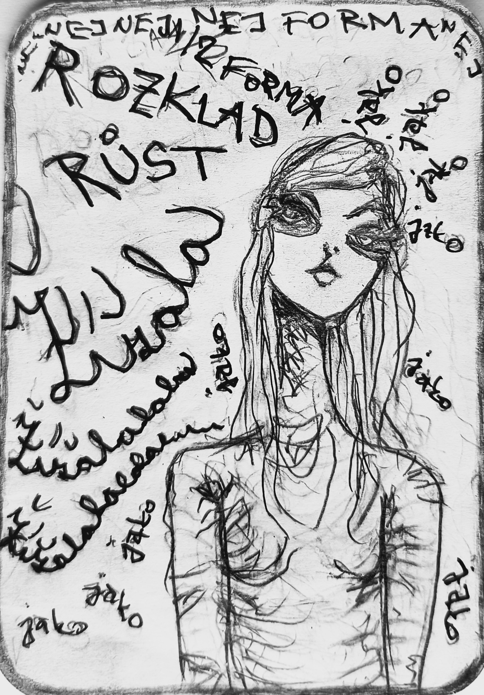

MOUSE · SEMANTIC GAP · ROZKLAD KARTY
Žížala
Původní text a ilustrace jako figura a pozadí jednoho jevu.
Opravená segmentace: čtyři přirozené jednotky děje a vztahu. Počet úseků není předem stanoven. Původní text zůstává zachovaný včetně titulku a podtitulu. Předchozí desetidílné měření je zneplatněno.
01 / původní materiál
Celý zdrojový text
02 / rozklad
Přirozené úseky
Každý úsek je přesný souvislý výřez zdroje. Titulek a podtitulek zůstávají v celém zdroji, nejsou uměle připojené k jedné z událostí.
03 / měření
Stav výpočtů
Staré TF-IDF, vzdálenosti, PCA a H0 vycházely z deseti uměle vytvořených bloků. Jejich výsledky se zde proto nepřenášejí. Nové výpočty musí vzniknout až nad touto revidovanou segmentací.
04 / figura a pozadí
Text + ilustrace jako jeden jev
Samostatné textové měření nevysvětluje vztah mezi textem a ilustrací. Obrazový vektor ani společná textově-obrazová vzdálenost zatím nejsou vypočítány.